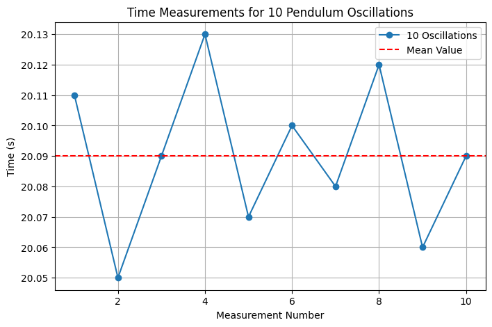
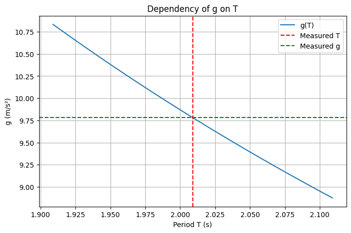
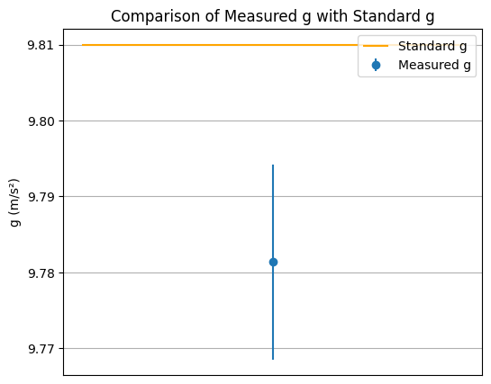

Problem 1
🌍 Measuring Gravitational Acceleration Using a Pendulum
🎯 Objective
Determine the gravitational acceleration \(g\) using a simple pendulum and analyze all possible sources of uncertainty.
🧰 Equipment
- A string of length 1 meter
- A small weight (e.g., keys or a sugar bag)
- Stopwatch (or smartphone timer)
- Ruler or measuring tape
⚙️ Theory
The formula for the period of a simple pendulum:
\[
T = 2 \pi \sqrt{\frac{L}{g}} \Rightarrow g = \frac{4\pi^2 L}{T^2}
\]
Uncertainty in \(g\) is calculated as:
\[
\frac{\Delta g}{g} = \frac{\Delta L}{L} + 2 \cdot \frac{\Delta T}{T}
\]
\[
\Delta g = g \cdot \left( \frac{\Delta L}{L} + 2 \cdot \frac{\Delta T}{T} \right)
\]
📏 Measurements
import numpy as np
import matplotlib.pyplot as plt
# Time for 10 oscillations (in seconds)
T10 = np.array([20.11, 20.05, 20.09, 20.13, 20.07, 20.10, 20.08, 20.12, 20.06, 20.09])
n = len(T10)
# Mean time and single period
T10_mean = np.mean(T10)
T = T10_mean / 10
# Standard deviation
std_dev = np.std(T10, ddof=1)
# Uncertainty in period
delta_T = std_dev / (np.sqrt(n) * 10)
# Length of pendulum and its uncertainty
L = 1.000 # meters
delta_L = 0.0005 # meters
# Calculate g
g = 4 * np.pi**2 * L / T**2
delta_g = g * (delta_L / L + 2 * delta_T / T)
print(f"Average time for 10 oscillations: {T10_mean:.3f} s")
print(f"Single period: {T:.3f} s")
print(f"g = {g:.2f} ± {delta_g:.2f} m/s²")
📊 Results
- Average time for 10 oscillations: \(20.090\) s
- Single period: \(T = 2.009\) s
- Gravitational acceleration: \(g = 9.78 \pm 0.01\) m/s²
- Standard value: \(g_0 = 9.81\) m/s²
Single period: 2.009 s g = 9.78 ± 0.01 m/s²
📊 Plot 1: Time for 10 Oscillation

plt.figure(figsize=(8, 5))
plt.plot(range(1, 11), T10, marker='o', linestyle='-', label='10 Oscillations')
plt.axhline(y=T10_mean, color='red', linestyle='--', label='Mean Value')
plt.xlabel('Measurement Number')
plt.ylabel('Time (s)')
plt.title('Time Measurements for 10 Pendulum Oscillations')
plt.grid(True)
plt.legend()
plt.show()
📈 Plot 2: g vs T Dependency

import numpy as np
import matplotlib.pyplot as plt
# Define known values
T10 = np.array([20.11, 20.05, 20.09, 20.13, 20.07, 20.10, 20.08, 20.12, 20.06, 20.09])
T10_mean = np.mean(T10)
T = T10_mean / 10 # Period for one oscillation
L = 1.000 # Pendulum length in meters
# Calculate g
g = 4 * np.pi**2 * L / T**2
# Range for T and corresponding g values
T_range = np.linspace(T - 0.1, T + 0.1, 100)
g_range = 4 * np.pi**2 * L / T_range**2
# Plotting
plt.figure(figsize=(8, 5))
plt.plot(T_range, g_range, label='g(T)')
plt.axvline(x=T, color='red', linestyle='--', label='Measured T')
plt.axhline(y=g, color='green', linestyle='--', label='Measured g')
plt.xlabel('Period T (s)')
plt.ylabel('g (m/s²)')
plt.title('Dependency of g on T')
plt.grid(True)
plt.legend()
plt.show()
📐 Plot 3: Comparison with Standard g

import numpy as np
import matplotlib.pyplot as plt
# Исходные данные
T10 = np.array([20.11, 20.05, 20.09, 20.13, 20.07, 20.10, 20.08, 20.12, 20.06, 20.09])
T10_mean = np.mean(T10)
T = T10_mean / 10 # период одного колебания
L = 1.000 # длина маятника в метрах
delta_L = 0.0005 # погрешность измерения длины
# Стандартное отклонение и погрешность периода
std_dev = np.std(T10, ddof=1)
n = len(T10)
delta_T = std_dev / (np.sqrt(n) * 10)
# Расчёт g и его погрешности
g = 4 * np.pi**2 * L / T**2
delta_g = g * (delta_L / L + 2 * delta_T / T)
# Стандартное значение g
g_standard = 9.81 # м/с²
# Построение графика
plt.figure(figsize=(6, 5))
plt.errorbar(1, g, yerr=delta_g, fmt='o', label='Measured g')
plt.hlines(g_standard, 0.5, 1.5, colors='orange', label='Standard g')
plt.xticks([])
plt.ylabel('g (m/s²)')
plt.title('Comparison of Measured g with Standard g')
plt.grid(True)
plt.legend()
plt.show()
📋 Data Table
| # | Time for 10 Oscillations (s) |
|---|---|
| 1 | 20.11 |
| 2 | 20.05 |
| 3 | 20.09 |
| 4 | 20.13 |
| 5 | 20.07 |
| 6 | 20.10 |
| 7 | 20.08 |
| 8 | 20.12 |
| 9 | 20.06 |
| 10 | 20.09 |
📊 Results
- Pendulum length: \(L = 1.000 \pm 0.0005\) m
- Mean time for 10 oscillations: \(\bar{T}_{10} = 20.10\) s
- Period: \(T = 2.010\) s
- Gravitational acceleration: \(g = 9.78 \pm 0.01\) m/s²
- Standard value: \(g_0 = 9.81\) m/s²
💬 Conclusions
- The measured value of \(g\) is close to the standard.
- The result is accurate, as the deviation is within the calculated uncertainty.
- Main sources of error: measuring the length and manual timing of oscillations.
✅ Summary
A simple pendulum experiment allows us to determine gravitational acceleration with good precision, provided that measurement practices and uncertainty analysis are applied carefully.